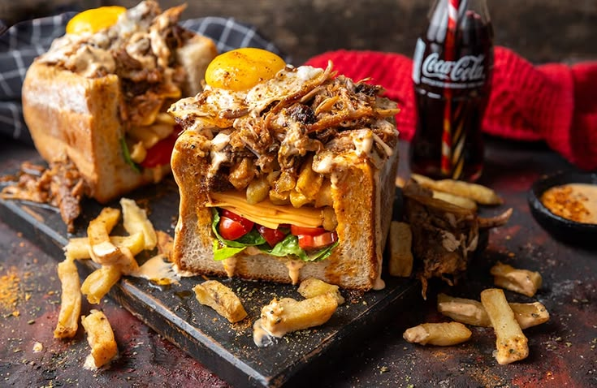

South African Kota

Description
**The Legendary Kota 🇿🇦** Born in the streets of Soweto, perfected by
generations of hungry South Africans, and feared by white bread
everywhere. The Kota is no ordinary sandwich; it's a historical
masterpiece featuring a quarter loaf stuffed with chips, polony, cheese,
Russian, atchar, and whatever else the chef's imagination (and your
budget) allows. One bite, and suddenly you understand why civilizations
were built around food. A true South African treasure! 😂🔥
Ingredients
- Fresh quarter loaf of bread
- Golden slap chips
- Russian sausage
- Polony slices
- Melted cheddar cheese
- Fried egg
- Atchar(optional)
- Special burger sauce
Steps
-
Prepare the bread:Take a fresh quarter loaf and
carefully hollow out the soft inside to create enough room for the
fillings.
-
Fry the chips:Cook your slap chips until golden and
crispy. Season with a little salt and Aromat.
-
Cook the meat:Fry the Russian sausage and polony until
nicely heated. Add some fried onions for extra flavour.
-
Prepare the egg:Fry an egg to your preferred
perfection. Don't be shy with the seasoning!
-
Build the foundation:Spread mayonnaise and special
burger sauce generously inside the bread.
-
Load it up:Add your chips, Russian, polony, cheese,
fried egg, tomato slices and lettuce.
-
Add the magic:Throw in some atchar, tomato sauce and
any extra sauces your heart desires.
-
Seal the masterpiece:Carefully place the top half of
the bread back on and press everything together.
-
Serve and enjoy:Cut it in half, grab a handful of
serviettes and prepare for a life-changing experience!
WARNING:May cause extreme happiness, temporary silence
and an unexplained desire to visit Soweto. 🇿🇦😂
Home